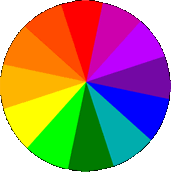

Since people associate particular colors with different emotions, the colors used on your website can have a psychological effect on visitors to your site. By using specific colors geared towards the emotion you want to invoke, you can actually increase product sales.
Here are some colors along with the emotions and symbols they stimulate:
WHITE- purity, innocence, peace, perfection, chastity, sterility, cleanliness. In general, white creates a cool and refreshing feeling.
BLACK- night, space, authority, sturdiness, reliability, power, constancy, prudence, wisdom, classy, elegance, submission, mourning, demons, witches. Black is a controversial color as it can symbolize both good and evil.
RED- love, excitement, warmth, heat, fire, blood, passion, power, aggression, action. Use red as an attention grabber. It works better as an accent color rather than a background one.
PINK- romantic, affection, sensuality, tenderness, calm, soft hearted, softness, femininity. Pink tends to reduce aggression.
BLUE- sky, ocean, water, temperature, ice, coolness, mist, shadow, travel, freedom, truth, solitude, wisdom, trust, loyalty, peaceful, calmness, intelligence, dedication, masculinity. Different shades of blue convey opposite meanings. Light blue is peaceful while dark blue is depressing.
PURPLE- royalty, dignity, luxury, wealth, sophistication, feminine, passion, romance, sensitivity, coolness, mist, shadows, mysterious, mystic.
GREEN- money, calm, envy, greed, nature, life, youth, renewal, hope, vigor, fertility, rebirth, freedom, guilt. Different shades of green have different meanings. Dark green-cool. masculine, conservative, wealth. Emerald green- immortality. Olive green- peace. Green is the easiest color on the eye.
YELLOW- light, purity, understanding, brightness, warmth, playfulness, creativity. Lemon yellow is the most eye fatiguing color. Yellow can increase irritability so yellow should not be used as a main color, only as an accent. Yellow enhances concentration.
ORANGE- autumn, youthful, fire, warmth, contentment, fruitfulness, wholesomeness, strong, generous, endurance, strength, ambition. Orange is the color most associated with appetite so it would be a good color choice for a website selling food products. Orange also makes a product seem more suitable for everyone and more affordable.
BROWN- wood, comfort, strength, earth, solid, reliable, credible, maturity, humility, conservancy. Light brown conveys genuineness.
GRAY- exclusivity. Enhances the psychological response of other colors.
In general, red, orange, and yellow are exciting colors while purple, blue and green are calming ones.
Use the color that symbolizes the emotion you want to convey as the primary color on your website. Add 1-2 other colors to reinforce this emotion. The colors used for your background, header, graphics, text, highlighting, headlines, etc. will all contribute to your website's influence on your visitors.